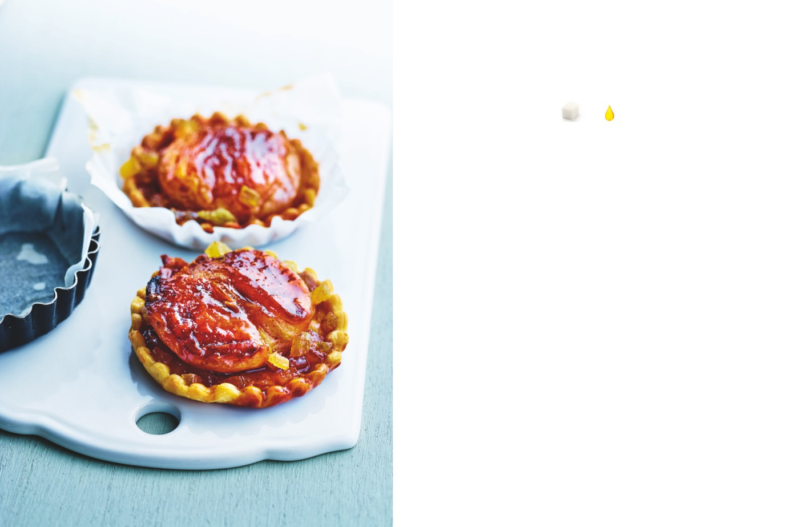

Tartelettes aux pommes
et au gingembre
APPORTS NUTRITIONNELS PAR TARTELETTE
10
1
carrés
carré
de sucre
de graisse
PRÉPARATION : 25 minutes / CUISSON : 50 minutes
Ingrédients pour 4 tartelettes
1.
Préchauffez le four à 180 °C (th. 6).
2 cuillerées à soupe de cassonade
ou de sucre complet
2.
Mélangez la cassonade, la poudre de gingembre, le poivre,
1 cuillerée à café rase de gingembre
la cannelle et la poudre de quatre-épices.
en poudre
1/2 cuillerée à café de poivre noir
du moulin
3.
Pelez les pommes en les laissant entières, retirez le cœur
1 pincée de cannelle en poudre
avec un vide-pomme. Disposez les pommes debout dans un plat
1/2 cuillerée à café de poudre
à gratin et remplissez la partie creuse du mélange sucre-épices.
de quatre-épices
Versez 2 cuillerées à soupe d’eau dans le plat. Faites cuire
2 pommes à chair ferme,
30 minutes au four ; les pommes doivent rester entières.
assez grosses (boskoop,
Laissez-les refroidir, puis coupez-les en deux dans le sens
reinettes, idared, royal gala)
de la longueur. Gardez le sirop qui s’est recueilli dans le plat.
1 grosse noix (environ 25 g)
de gingembre confit
1 recette de pâte à tarte
4.
Coupez le gingembre confit en petits dés.
(voir la recette de la tarte fine
aux fraises, page 27)
5.
Étalez la pâte à tarte le plus finement possible. Garnissez-en
4 moules à tartelette. Placez une demi-pomme dans chaque fond
de tartelette, arrosez du reste de sirop et recouvrez de petits dés
de gingembre confit. Terminez la cuisson au four à 180 °C pendant
20 minutes, jusqu’à ce que les bords de la pâte soient dorés.
Servez tiède ou froid.
L’ASTUCE DE CHEF
Cette recette d’origine médiévale peut aussi être réalisée
avec des poires ou des coings. Dans ce dernier cas,
la précuisson des fruits au four est plus longue :
comptez 50 minutes.
Fruités
31